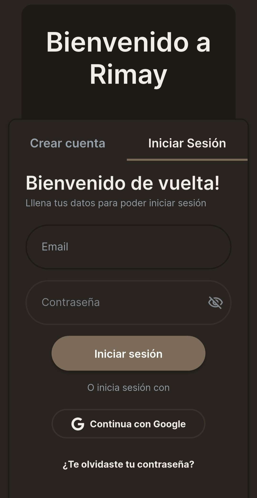
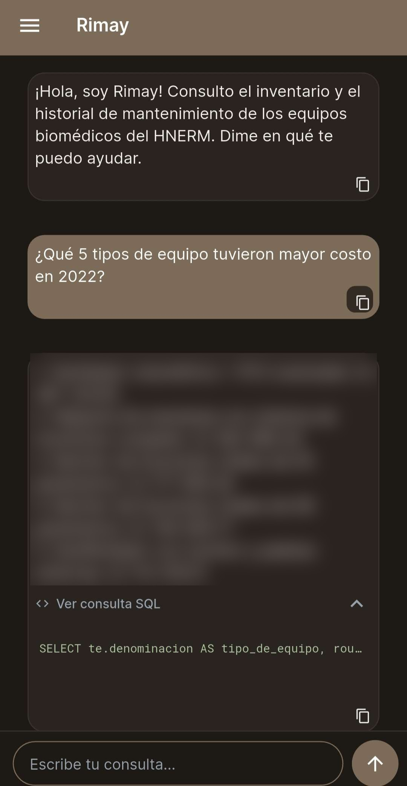
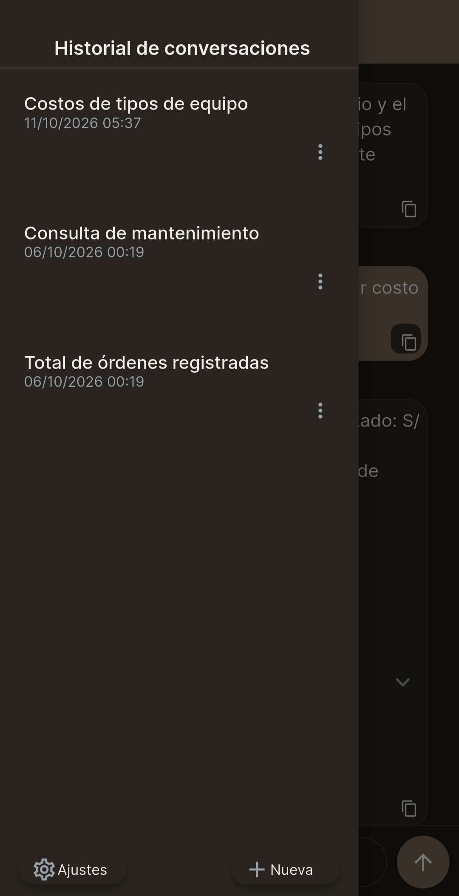

Rimay
Consulta en lenguaje natural para la gestión del mantenimiento biomédico
Aplicación móvil para el personal de ingeniería clínica de un hospital nacional. Escriben una pregunta, un modelo de lenguaje la convierte en SQL, el sistema la valida y la ejecuta sobre PostgreSQL, y la app responde mostrando la consulta para que sea verificable.
7 872órdenes de trabajo
1 412equipos biomédicos
86 %exactitud de ejecución
- Base de datos PostgreSQL normalizada, con RLS y rol de solo lectura.
- Backend serverless en Supabase Edge Functions (TypeScript) con la API de OpenAI.
- Validador de seguridad: 100 % de rechazo de inyección SQL y modificaciones.
- Registro, verificación de correo, Google OAuth e historial por usuario.


